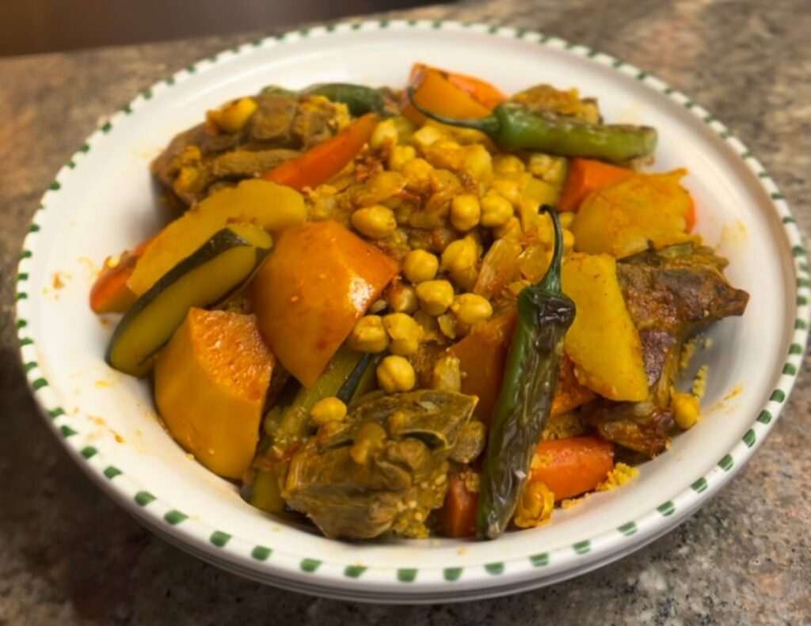

Home
Couscous

Description
A spicy, flavorful dish made with steamed semolina, tender meat (lamb, chicken, or fish), and vegetables like carrots,
zucchini, and chickpeas. Cooked in a rich tomato broth with harissa and warm spices, it’s a hearty and aromatic staple
of Tunisian cuisine,often shared with family.
Ingredince
- Semolina couscous (steamed)
- Meat (lamb, chicken, beef, or fish)
- Vegetables (carrots, zucchini, potatoes, turnips, chickpeas)
- Tomato paste & fresh tomatoes
- Harissa (spicy chili paste)
- Spices (turmeric, cumin, coriander, caraway)
- Olive oil & garlic
- Broth (for cooking and flavor)
Steps
- Cook meat (lamb/chicken) with onions, garlic, tomato paste, harissa, and spices in a pot.
- Add veggies (carrots, zucchini, potatoes) and water. Simmer 30 mins.
- Prepare couscous by steaming or soaking in hot water, then fluff with oil.
- Serve couscous topped with the stew.